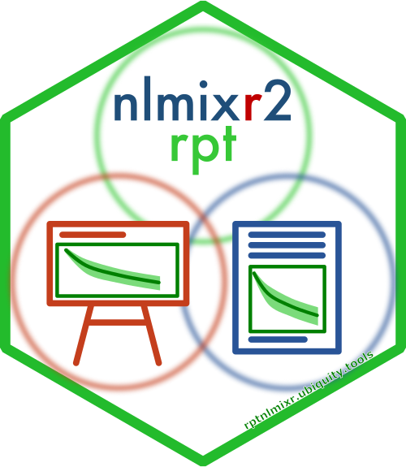

Reporting nlmixr2 Fit Results
Source:vignettes/Reporting_nlmixr_Fit_Results.Rmd
Reporting_nlmixr_Fit_Results.RmdIntroduction 
The purpose of nlmixr2rpt is to automate reporting of
nlmixr2 analyses. This is accomplished by creating a yaml
file that contains reporting options, figure and table generation code,
and general content for Word and PowerPoint files.
General workflow
First we need an nlmixr2 fit object. We’re going to load
a fit example stored in this package:
library(nlmixr2rpt)
library(onbrand)
# This will create an example fit object to use in the examples below
fit = fetch_fit_example()Next we need to create onbrand report objects. This will
create report objects for both PowerPoint (obnd_pptx) and
Word (obnd_docx).
obnd_pptx = read_template(
template = system.file(package="nlmixr2rpt", "templates","nlmixr_obnd_template.pptx"),
mapping = system.file(package="nlmixr2rpt", "templates","nlmixr_obnd_template.yaml"))
obnd_docx = read_template(
template = system.file(package="nlmixr2rpt", "templates","nlmixr_obnd_template.docx"),
mapping = system.file(package="nlmixr2rpt", "templates","nlmixr_obnd_template.yaml"))Next we will add the report elements to the report objects using the
report_fit() function. This function can be used with both
types of report. The contents will be different depending on the
document type.
obnd_pptx = report_fit(
fit = fit,
obnd = obnd_pptx)
obnd_docx = report_fit(
fit = fit,
obnd = obnd_docx)This function will append the report elements for the supplied fit
object to the supplied report. If you have multiple fit objects they can
added sequentially. You can also add other report content using the
onbrand and officer functions. Once you’re
done then you just need to save the reports:
save_report(obnd_pptx, "report.pptx")
save_report(obnd_docx, "report.docx")The contents of each report type is defined in a yaml file. The
commands above use the default value found in the
nlmixr2rpt package. To customize the report elements you
can make a copy of the file in your current working directory:
file.copy(system.file(package="nlmixr2rpt", "templates", "report_fit.yaml"),
"my_report.yaml")Then you can edit the my_report.yaml file and when you
call report_fit() provide this yaml file as the
rptyaml argument. The following section will describe the
elements of the yaml report format.
The yaml report file structure
The core of nlmixr2rpt is the yaml reporting file. Below
we outline each of the main sections and describe the expected elements
in those sections.
placeholders
You may wish create your report template with placeholders. For example if you want create a generic template for population PK analysis, it may be useful to label the figures generically. You can use this section to define placeholders that will be applied when the report is created. For example consider the yaml code here:
placeholders:
CMPD: Compound Name
CUNITS: Conc Units
OBJ: sprintf("%3g", fit$objf)When you create the report you can label your y-axis generically such as:
"===CMPD=== (===CUNITS===)"
But when the report is built, it will become:
"Compound Name (Conc Units)"
Notice that the OBJ placeholder contains R Code. By
default the reporting process will try to evaluate the placeholders as R
Code. If that fails it will revert back to the string supplied. If you
run into problems you can quote your placeholder value with both double
and single quotes. For example:
ISSTR:"'ls()'"
ISCMD: ls()The ISSTR field will just result in the string
"ls()" while the ISCMD field will return a
list of the objects in the environment where the string is evaluated. It
is also possible to overwrite the contents of this file at runtime by
providing a placeholders (placeholder) argument to
report_fit().
Note: Fields that support placeholders will be indicated by [PH] and fields with evaluable code will be indicated by [EV].
parameters
For certain reporting elements it may be better to present parameters
differently than the parameter names being used in the model. In
nlmixr you can use a comment after the parameter definition
to specify alternate text. The function gen_pest_table()
will use this alternate text if it is present. In the
parameters section you have some more flexability in how
parameters are reported. You can define any parameters you want here
whether they are present in the model or not. They will only be used if
they are present. For tables in Word or PowerPoint you can specify the
names using markdown (md), otherwise you can specify how
they will be handled in text environments (txt). For
example the intrinsic clearance may be called lCLint in the
model. And you can specify it as:
parameters:
lCLint:
md: "CL~int~ (L/hr)"
txt: "CLint (L/hr)" It is also possible to overwrite the contents of this file at runtime
by providing a parameters argument to
report_fit().
Note: If you specify a parameter name here it will
overwrite any alternate text specified in the model
ini().
covariates
For figure and table generation it can be useful to have your
covariates defined. You can define them here as either categorical
(cat) or continuous (cont). For example to
define the categorical covariates as SEX and ROUTE and the continuous
covariate as WT you would do the following:
covariates:
cat: ["SEX", "ROUTE"]
cont: ["WT"]If you don’t need any covariates you can set them to
NULL. If you want to overwrite these at runtime you can
specify different values when calling report_fit(). These
are available in the figure and table runtime environments as the
objects cat_covars for categorical covariates and
cont_covars for continuous covariates.
options
This section allows you to control general report options. Each element here can be either an explicit value. If identified as evaluable [EV] it will first attempt to evaluate it as R code. If that fails the explicit value will be used. The following options are supported with the expected data type in parentheses:
output_dir[PH,EV] - The location where figures will be generated (character)resolution[EV] - Resolution of figures being generated (numeric)figenv_preambleandtabenv_preamble- User-defined code evaluated before figures and tables are built (specify libraries needed, source files containing user defined code, etc.)fig_stamp[PH] - If this is set to a string it will stamp the contents of that string at the lower left portion of the figure after writing. This applies only to figures where thep_resobject is either a vanillaggplotobject, a paginatedggforceobject, or the result ofggarragefrom theggpubrpackage. Along with the regular placeholders, this option can also contain the===FILE===placeholder. This will be replaced with the full path to the figure file that is generated.
Building figures & tables
Figures and tables are defined in terms of R code that will be evaluated. There are several objects available in the environment that can be used when creating these report elements. The following objects will be defined:
-
fid- current figure ID (figure environment only) -
tid- current table ID (table environment only) -
fit-nlmixr2fit object -
cat_covars- character object containing the categorical covariates -
cont_covars- character object containing the continuous covariates -
height- figure height in inches (figure environment only) -
obnd- onbrand object of the report document -
output_dir- directory where figures are stored -
resolution- resolution of the figure (figure environment only) -
rptdetails- result of reading in the report yaml file -
rpttype- either “Word” or “PowerPoint” -
width- figure width in inches (figure environment only) -
xpdb- the default yaml file contains code in the preamble to create this object by running xpose_data_nlmixr(fit) (figure environment only)
figures
The figures section consists of figure IDs. These IDs are used again when defining the Word and PowerPoint report contents. Consider this example:
figures:
dv_vs_pred:
orientation: "portrait"
caption: "dv_vs_pred caption"
caption_format: "text"
title: "dv_vs_pred title"
cmd: |-
p_res <- dv_vs_pred(xpdb, caption=NULL, title=NULL) +
xlab("Observed ===CMPD=== Concentrations (===CUNITS===)") +
ylab("Population Predicted ===CMPD=== Concentrations (===CUNITS===)")It creates the figure with the ID dv_vs_pred. It has the
following elements:
-
orientation- Orientation when used in a Word report, it can be either “portrait” or “landscape”. -
caption[PH] - Figure caption in Word reports. -
caption_format- This element is optional and can be either"text"(default plain text) or"md"(Markdown). -
title[PH] - Slide title when the figure is used in PowerPoint. -
cmd[PH] - Command to generate the figure.
Note: When the cmd is evaluated it
needs to create a variable called p_res. This can be either
a ggplot object, a paginated object from
ggforce, the result of ggarrage from the
ggpubr package, or a vector of file names containing image
files created by the code in cmd. If you want to
conditionally skip the reporting of a figure, you can instead set the
value of p_res to NA. This will generate a
message and prevent inclusion of a build error in the final document.
You should also include any libraries you want in the relevant preamble
section to ensure the functions are available to you.
tables
Tables behave similarly to figures. In the tables section you create a table ID with the following options specified.
-
orientation- Orientation when used in a Word report, it can be either “portrait” or “landscape”. -
caption[PH] - Table caption in Word reports. -
caption_format- This element is optional and can be either"text"(default plain text) or"md"(Markdown). -
title[PH] - Slide title when the table is used in PowerPoint. -
cmd[PH] - Command to generate the table.
This example will create a table of the parameter estimates.
tables:
pest_table:
orientation: "portrait"
caption: "Parameter Estimates"
caption_format: "Parameter Estimates"
title: "Parameter Estimates"
cmd: |-
t_res <- gen_pest_table(
fit = fit,
obnd = obnd,
rptdetails = rptdetails)Note: When the cmd is evaluated it
needs to create a variable called t_res. This a list which
can contain the following elements:
-
df- List of data frames containing the tabular information. -
ft- List of flextables containing the tabular information
If you only supply the data frames list element, they will be
converted into flextables internally. Flextables will span multiple
pages automatically. If you prefer to have a caption on each page you
can split the tables manually into multiple data frames/flextables. The
reporting functionality is written to support table spanning multiple
pages. If you define a separate table for each page you need to add
those as sequential list elements to the df and
ft elements. For example:
t_res$df = list()
t_res$df[[1]] = data.frame()
t_res$df[[2]] = data.frame()
etcor
t_res$ft = list()
t_res$ft[[1]] = flextable::flextable()
t_res$ft[[2]] = flextable::flextable()
etcIf you only have a single table or if you want it to span multiple
pages automatically you simply specify the first element listed above
(e.g. t_res$df[[1]]).
If you want to conditionally skip the generation of a table, simply
set t_res to NA. Like with figures above, this
will signal to the reporting functions that you do not want to generate
this table for the current fit object. It will also prevent the
generation of a build error.
pptx
This section defines general aspects of PowerPoint reports and also
the contents of the report relating to the fitting results. Both the
figures and tables sections contain the
onbrand slide master names ("content_text") to
be used to hold these objects. The slides will be created with a title
specified in figure and table IDs. The placeholder name for the title
("title") must be specified as well as the placeholder name
for the content ("content_body"). Figures for PowerPoint
reports must be generated in the dimensions of the placeholder, so it is
important that the width and height elements
are specified in inches.
pptx:
figures:
master:
name: "content_text"
title_ph: "title"
content_ph: "content_body"
width: 9.5
height: 5.0
tables:
master:
name: "content_text"
title_ph: "title"
content_ph: "content_body"The actual content is specified in the content section.
This is a list of keywords followed by a value. The table
keyword should be followed by a table ID defined in the
tables section. Similarly the figure keyworld
should be followed by a figure ID defined in the figures
section:
content:
- table: pest_table
- figure: ind_plots
- figure: dv_vs_pred
- figure: dv_vs_ipred
- figure: res_vs_pred
- figure: res_vs_idv
- figure: prm_vs_iteration
- figure: absval_res_vs_pred
docx
This section starts with general information about word documents.
The figures section defines the height and width of figures
for both landscape and portrait orientations.
Again the units here are inches.
docx:
figures:
landscape:
width: 8.0
height: 4.2
portrait:
width: 6.5
height: 6.0Just like with PowerPoint the content is defined in the
content section. This can be defined as a
figure or a table the same as in PowerPoint.
Content can also include text elements as well. Just specify the
onbrand style to control general formatting.
content:
- text:
text: "Figures"
style: Heading_1
- figure: dv_vs_pred
- figure: ind_plots
- figure: dv_vs_ipred
- figure: res_vs_pred
- figure: res_vs_idv
- figure: prm_vs_iteration
- figure: absval_res_vs_pred
- text:
text: "Tables"
style: Heading_1
- table: pest_tableCustomizing reports for your organization
The reporting here is done using the onbrand package.
This provides an abstraction layer to the officer package.
The benefit here is that you can use your own organization Word and
PowerPoint templates. Simply create them with the appropriate masters
for PowerPoint or styles for Word, then create an on brand mapping file.
When you initialize your report objects you can just provide the your
organizational template and mapping files. For more details on how to
create the templates and mapping files, see the vignette in the
onbrand package.
PowerPoint
To create an onbrand PowerPoint template for your
organization you will need the following master slide names define with
the corresponding elements.
Master/Template |
onbrand |
Content |
Name |
Placeholder |
Type |
title_slide |
title |
text |
sub_title |
text |
|
section_slide |
title |
text |
sub_title |
text |
|
title_only |
title |
text |
content_text |
title |
text |
sub_title |
text |
|
content_body |
text |
|
content_list |
title |
text |
sub_title |
text |
|
content_body |
list |
|
two_content_header_list |
title |
text |
sub_title |
text |
|
content_left_header |
text |
|
content_left |
list |
|
content_right_header |
text |
|
content_right |
list |
|
two_content_header_text |
title |
text |
sub_title |
text |
|
content_left_header |
text |
|
content_left |
text |
|
content_right_header |
text |
|
content_right |
text |
|
two_content_list |
title |
text |
sub_title |
text |
|
content_left |
list |
|
content_right |
list |
|
two_content_text |
title |
text |
sub_title |
text |
|
content_left |
text |
|
content_right |
text |
Word
Similarly, to create an onbrand Word template you will
need to the following onbrand styles defined.
onbrand |
Word |
Style |
Style |
Style |
Type |
Code |
Code |
paragraph |
Figure_Caption |
graphic title |
paragraph |
Heading_1 |
heading 1 |
paragraph |
Heading_2 |
heading 2 |
paragraph |
Heading_3 |
heading 3 |
paragraph |
Normal |
Normal |
paragraph |
Notes |
Notes |
paragraph |
Table_Caption |
table title |
paragraph |
TOC |
toc 1 |
paragraph |
Table |
Table Grid |
table |
Report configuration file report_fit.yaml
placeholders:
CMPD: Compound Name
CUNITS: Conc Units
TUNITS: Time Units
RUN: RUNN
OBJ: sprintf("%3g", fit$objf)
parameters:
lVp:
md: "V~p~"
txt: "Vp"
add_err:
md: "Add Err"
txt: "Add Err"
prop_err:
md: "Prop Err"
txt: "Prop Err"
covariates:
cat: NULL
cont: NULL
options:
output_dir: "file.path(getwd(), '===RUN===')"
resolution: 300
fig_stamp: "source: ===FILE==="
figenv_preamble: |-
library("ggplot2")
library("xpose")
library("ggforce")
library("ggPMX")
xpdb = xpose.nlmixr2::xpose_data_nlmixr(fit)
tabenv_preamble: NULL
figures:
dv_vs_pred_ipred:
orientation: "portrait"
caption: "Observed vs Predicted"
title: "Observed vs Predicted"
cmd: |-
p_pred <- dv_vs_pred(xpdb, caption=NULL, title=NULL, subtitle=NULL) +
ggtitle("===CMPD=== (===CUNITS===)") +
coord_fixed()+
ylab("Observed") +
xlab("Population Predicted") +
theme_light()
yrange = layer_scales(p_pred)$y$range$range
xrange = layer_scales(p_pred)$x$range$range
lb = min(c(yrange,xrange))
ub = max(c(yrange,xrange))
p_pred = p_pred + xlim(c(lb, ub)) + ylim(c(lb,ub))
p_ipred <- dv_vs_ipred(xpdb, caption=NULL, title=NULL, subtitle=NULL) +
ggtitle("===CMPD=== (===CUNITS===)") +
coord_fixed()+
ylab("Observed") +
xlab("Individual Predicted") +
theme_light()
yrange = layer_scales(p_ipred)$y$range$range
xrange = layer_scales(p_ipred)$x$range$range
lb = min(c(yrange,xrange))
ub = max(c(yrange,xrange))
p_ipred = p_ipred + xlim(c(lb, ub)) + ylim(c(lb,ub))
p_res <- ggpubr::ggarrange(p_pred, p_ipred, ncol=2, nrow=1 )
res_vs_pred_idv:
orientation: "portrait"
caption: "CWRES vs Pred and Time"
title: "CWRES vs Pred and Time"
cmd: |-
if("CWRES" %in% names(fit)){
p_pred <- res_vs_pred(xpdb, caption=NULL, title=NULL, res="CWRES") +
ggtitle("===CMPD=== (===CUNITS===)") +
ylab("CWRES") +
xlab("Population Predicted") +
theme_light()
p_idv <- res_vs_idv(xpdb, caption=NULL, title=NULL, res="CWRES") +
ggtitle("Time (===CUNITS===)") +
ylab("CWRES") +
xlab("Time (===TUNITS===)") +
theme_light()
p_res <- ggpubr::ggarrange(p_pred, p_idv, ncol=2, nrow=1 )
} else {
p_res <- NA
}
eta_cat:
orientation: "landscape"
caption: "Effect of categorical covariates"
title: "Effect of categorical covariates"
cmd: |-
if(!is.null(cat_covars)){
ctr = ggPMX::pmx_nlmixr(fit,
vpc = FALSE,
conts = cont_covars,
cats = cat_covars)
p_res <- ggPMX::pmx_plot_eta_cats(ctr) +
theme_light()
} else {
p_res <- NA
}
eta_cont:
orientation: "landscape"
caption: "Effect of continuous covariates"
title: "Effect of continuous covariates"
cmd: |-
if(!is.null(cont_covars)){
ctr = ggPMX::pmx_nlmixr(fit,
vpc = FALSE,
conts = cont_covars,
cats = cat_covars)
p_res <- ggPMX::pmx_plot_eta_conts(ctr) +
theme_light()
} else {
p_res <- NA
}
prm_vs_iteration:
orientation: "landscape"
caption: "SAEM Stabilization"
title: "SAEM Stabilization"
cmd: |-
p_res <- prm_vs_iteration(xpdb, caption=NULL, title=NULL) +
theme_light()
ind_plots:
orientation: "landscape"
caption: "Individual and population prediction overlay"
title: "Individual and population prediction overlay"
cmd: |-
p_res <- ind_plots(xpdb, nrow=3, ncol=4, caption=NULL, title=NULL) +
ylab(" ===CMPD=== (===CUNITS===)") +
xlab("Time (===TUNITS===)") +
theme_light()
skip_figure:
orientation: "landscape"
caption: "ind_plots caption"
title: "ind_plots title"
cmd: |-
p_res <- NA
tables:
skip_table:
orientation: "portrait"
caption: "Parameter Estimates"
title: "Parameter Estimates"
cmd: |-
t_res <- NA
pest_table:
orientation: "portrait"
caption: "Parameter Estimates"
title: "Parameter Estimates"
cmd: |-
t_res <- gen_pest_table(
fit = fit,
obnd = obnd,
rptdetails = rptdetails)
pptx:
figures:
master:
name: "content_text"
title_ph: "title"
content_ph: "content_body"
width: 9.5
height: 5.0
tables:
master:
name: "content_text"
title_ph: "title"
content_ph: "content_body"
content:
- table: pest_table
- table: skip_table
- figure: ind_plots
- figure: dv_vs_pred_ipred
- figure: res_vs_pred_idv
- figure: prm_vs_iteration
- figure: eta_cont
- figure: eta_cat
- figure: skip_figure
docx:
figures:
landscape:
width: 8.0
height: 4.2
portrait:
width: 6.5
height: 6.0
content:
- text:
text: "Tables"
style: Heading_1
- table: pest_table
- text:
text: "Figures"
style: Heading_1
- figure: ind_plots
- figure: dv_vs_pred_ipred
- figure: res_vs_pred_idv
- figure: prm_vs_iteration
- figure: skip_figure
- figure: eta_cont
- figure: eta_cat